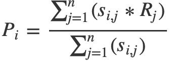

beer_data <- spark_read_csv(sc, "beer_data_fin.csv")
head(beer_data)Building a Recommendation System with Beer Data
machine learning
Beer culture in the United States has changed dramatically in the past decade or so. This trend is reflected in the development of a vibrant community of people who rate, review, and share information about beers online. Websites like BeerAdvocate, RateBeer, and Untappd give beer drinkers a place to share their tastes with others. Surprisingly, these sites do not recommend new beers to their users. This inspired me to create a recommender system by scraping data from these sites. While some beer sites prohibit web scraping, others only disallow scraping their data for commercial use. Others place no restrictions on scraping at all. For this project, I only scraped sites that do not forbid scraping in a robots.txt file. Ethical (and legal) web scraping has been made easier with the recent development of the polite R package.
I created a dataset of approximately 5.5 million ratings of 24.5 thousand beers from 100 thousand users. These data include reviews and metadata on beers (e.g. brewery location, beer style) and users (gender and age, location).
Due to the data’s size, I manipulate the data as a Spark dataframe with the sparklyr package. Let’s begin by importing the data and seeing what it looks like.
## # Source: spark<?> [?? x 3]
## beer_full user_score user_id
## <chr> <dbl> <int>
## 1 Saint Arnold Brewing Company Spring Bock 3.75 1
## 2 (512) Brewing Company (512) White IPA 2.19 2
## 3 Abita Brewing Co. Pecan Ale 3.99 2
## 4 Anheuser-Busch Bud Light 1 2
## 5 Anheuser-Busch Budweiser 2.24 2
## 6 Anheuser-Busch Busch Beer 1 2We have three columns, the beer name, a rating given by a user, and the user id. Each row represents a single rating from a user.
Let’s have a look at the distribution of beers by ratings, the number of reviews, and beer style. The figure below indicates that IPAs, Stouts, and Porters tend to receive better reviews than other styles of beer. To see this more clearly, click on the category names in the figure legend to toggle the styles of beer shown. You can also move your cursor over the data points to see information on individual beers. This figure was created with Highcharter, an API for Highcharts, which is a javascipt library for creating web-based visualizations.
To create my recommender system, I use item-based collaborative filtering, a method that uses similarities among items to produce recommendations. For this to work, I need to infer similarities among beers from patterns in users' beer ratings. I begin by converting my data into a “user-by-beer” matrix, where each row contains ratings from a given user. Because most users have not rated most beers, this will be a very sparse matrix. This will also be a very large matrix (~100,000 users x 24,500 beers = 2.5 billion cells!). We cannot fit this data in the R workspace as a conventional matrix. Fortunately, the sparsity of the matrix means that we should have no trouble working with the data as a sparse matrix. The Matrix package has tools that will help with this.
Sparse matrices are made up of three components: the row number (“i”) of a non-empty cell, the column number (“j”) of a non-empty cell, and the value (“x”) in that cell (the ratings). To create a vector of row numbers for the sparse matrix, I first find the number of ratings associated with each user. I then repeat the user id the number of times that this user has posted a rating. For example, if user 1 has 3 ratings and user 2 has 4 ratings, the i vector would be [1, 1, 1, 2, 2, 2, 2].
# Find number of users in the data
num_users <- beer_data %>% group_by(user_id) %>% summarise(count = n()) %>%
sdf_nrow
i <- beer_data %>%
# Find number of ratings for each user and sort by user_id
group_by(user_id) %>% summarise(count = n()) %>% arrange(user_id) %>%
# Convert from Spark dataframe to tibble and extract
# count (number of ratings) vector
select(count) %>% collect %>% .[["count"]]
# Repeat user_id by the number of ratings associated with each user
i <- rep(1:num_users, i)Creating a vector of column numbers associated with each beer rating (the “j” vector) is a bit more complicated. I’ve annotated my approach in the code below.
# Create Spark dataframe with ids for each beer
beer_key <- beer_data %>% distinct(beer_full) %>% sdf_with_sequential_id
# Merge unique beer ids to the beer data with left_join
j <- left_join(beer_data, beer_key, by = "beer_full") %>%
# Group by user_id, nest beer_ids in user_ids, and sort by user_id
group_by(user_id) %>% summarise(user_beers = collect_list(id)) %>%
arrange(user_id) %>%
# Unnest beer ids, extract column vector
select(user_beers) %>% mutate(vec = explode(user_beers)) %>% select(vec) %>%
collect %>% .[["vec"]]
# Change beer key from Spark dataframe to regular dataframe
beer_key <- beer_key %>% collectLastly, I extract a vector of user ratings from the dataframe. To do this I sort the data by user id, bring the data into R, and extract user scores as a vector.
# Sort data by user_id, bring data into R, and extract user_score vector
x <- beer_data %>% arrange(user_id) %>% select(user_score) %>% collect %>%
.[["user_score"]]I can now use the sparseMatrix function from the Matrix package to create a sparse matrix. Here’s how the sparse matrix is represented in R.
beer_sparse <- sparseMatrix(i = i, j = j, x = x)
head(beer_sparse)## 6 x 24542 sparse Matrix of class "dgCMatrix"
##
## [1,] . . . . . . . 4.25 . . . . . . .
## [2,] 4.97 3.90 1.00 . . . . . . . . 3.82 . . .
## [3,] 4.00 4.00 4.41 3 3.5 3.75 4.25 4.00 4 4.11 3.75 4.00 3.5 3.75 3.86
## [4,] 4.00 4.00 . . . . . . . . . . . . .
## [5,] 4.00 2.08 . . . 3.50 . 4.00 . . 4.45 3.10 . . 2.52
## [6,] . . . . . . . . . . . 3.50 . . .
##
## [1,] . . . . . . . . . . . . . . . .
## [2,] . . . . . . 4.50 . . . . 3.5 . . . .
## [3,] 4.25 3.9 3.75 4.25 3.8 4.5 3.94 4 4 4.0 3.5 4.0 4.25 4.25 3.5 3.75
## [4,] . . . . . . . . . . . . . . . .
## [5,] . . . 4.50 . 4.0 . . . 3.5 . . . 3.50 . 4.00
## [6,] . . . 4.00 . . . . . . . . . . . .
##
## [1,] ......
## [2,] ......
## [3,] ......
## [4,] ......
## [5,] ......
## [6,] ......
##
## .....suppressing columns in show(); maybe adjust 'options(max.print= *, width = *)'
## ..............................This provides a snapshot of the first six users in the matrix. The dots represent empty cells and the numbers represent ratings. This object is only 63Mb, large for a sparse matrix, but manageable for our purposes. Our next step is to calculate similarity scores among beers. Before we can do this, we need to make some more modifications to the data.
One problem with the data in its present form is that information for each beer is stored in a high dimensional vector. This poses computational and mathematical problems. A way to get around this issue is to do a partial singular value decomposition (SVD) of the sparse matrix. An SVD is a kind of matrix factorization that breaks an m by n matrix into three parts: an m by m matrix (“U”), an m by n diagonal matrix (“d”), and an n by n matrix (“V”). A partial SVD keeps only the columns and rows in U and V that correspond with the largest singular values in d. This amounts to replacing the high dimensional matrix with some lower dimensional matrices that retain much of the information in the original matrix. The irlba package in R lets you specify the number of singular values to use in a partial SVD. Most useful for our purposes, irlba can perform partial SVDs on sparse matrices. I make the arbitrary choice here to keep the 25 largest singular values, factoring my sparse matrix into an ~105,000x25 matrix (U), a 25x25 matrix (d), and a ~25x24,500 matrix (V). The matrix that interests me is V, which the irlba package automatically transposes into a 24,500x25 matrix. This can be thought of as representing ratings patterns for 24,500 beers (the rows) along 25 latent dimensions (the columns), albeit at a loss of some information. Let’s have a look at the first few rows of V.
beer_sparse_svd <- irlba(beer_sparse, 25)
head(beer_sparse_svd$v)## [,1] [,2] [,3] [,4] [,5]
## [1,] -0.0256985740 0.0229678228 0.005193778 0.0051384220 0.052757404
## [2,] -0.0062777787 0.0049419788 0.003314623 -0.0069633190 0.007472983
## [3,] -0.0005042966 0.0002114207 0.001387032 -0.0003306757 0.001741769
## [4,] -0.0022645231 0.0058033722 0.001458080 -0.0036489648 -0.003678065
## [5,] -0.0296513661 0.0466452519 0.003826150 0.0118276998 -0.016366716
## [6,] -0.0105372982 0.0086427265 0.017151058 0.0074637989 0.001469116
## [,6] [,7] [,8] [,9] [,10]
## [1,] -0.032494474 0.011456998 0.0108729014 -0.0035516823 0.020489015
## [2,] -0.010387374 0.019802582 0.0009407164 0.0131732961 -0.002966423
## [3,] -0.001858592 0.002485591 -0.0004080029 0.0024073091 -0.001065007
## [4,] 0.008207708 0.008591826 -0.0073319230 0.0007184202 0.003605576
## [5,] 0.049587403 0.043005553 -0.0051627987 0.0237230351 0.007313664
## [6,] -0.007417017 -0.013712596 -0.0028269823 0.0088606013 0.011820460
## [,11] [,12] [,13] [,14] [,15]
## [1,] -0.0155698493 0.032879244 -0.0113961215 0.039494023 0.0008142866
## [2,] 0.0222479391 0.047532155 -0.0116251008 -0.021787547 -0.0213485210
## [3,] 0.0027782202 0.006784769 -0.0022113610 -0.005041011 -0.0035659751
## [4,] -0.0016511631 0.001963106 -0.0003878318 -0.001373413 0.0033941471
## [5,] 0.0192508819 -0.036609922 -0.0007755873 0.022602177 0.0226693302
## [6,] -0.0009004369 0.014294341 -0.0004086656 0.006704642 0.0059271281
## [,16] [,17] [,18] [,19] [,20]
## [1,] -0.018455648 0.0198518744 -0.025979319 0.0040638017 -2.509825e-02
## [2,] 0.024394173 0.0173652077 0.034726167 0.0359433350 -3.948808e-03
## [3,] 0.004901526 0.0010760466 0.006260497 0.0042772709 -4.698751e-05
## [4,] 0.010084600 -0.0001870042 -0.002243230 0.0023221599 5.838164e-03
## [5,] 0.001787687 0.0110909919 0.021767510 -0.0355030003 -2.935002e-02
## [6,] -0.015706574 -0.0138034722 0.006490726 0.0006405754 -3.582705e-03
## [,21] [,22] [,23] [,24] [,25]
## [1,] -0.0025110953 0.011861830 -0.0045983390 -0.011089504 -0.003168855
## [2,] -0.0007522815 -0.023399756 0.0024942011 0.005222917 0.021328823
## [3,] -0.0001123453 -0.004374986 -0.0008616086 0.003446857 0.001396422
## [4,] -0.0005898594 0.008568204 -0.0060018709 0.002906900 -0.004490946
## [5,] -0.0095077192 -0.059850070 0.0720446770 0.054602777 -0.091766699
## [6,] 0.0060200613 0.007056965 -0.0165475619 0.001281834 -0.011646142These numbers represent the ratings patterns for 6 beers mapped onto 25 dimensions. I can now calculate similarity scores. While there are many options out there for computing similarity between vectors, I choose one of the simplest and most commonly-used ones: cosine distance. The cosine distance between two vectors is their dot product divided by the product of their norms. I calculate the cosine distance with a function from the lsa package.
Before we can find similarity scores among the beers in the data, we must consider one last issue. Calculating similarity scores among 24,500 beers would produce 24,500 choose 2, or roughly 300 million, similarity scores. We once again find ourselves exceeding the size limits of the R workspace. I sidestep this issue by only keeping the largest 500 similarity scores for each beer. While this cutoff resolves the size concern, we are still left with the task of computing 300 million similarity scores, most of which will be discarded. To do this, I use the foreach, parallel, and doParallel packages and parallelize this task. This took about fifteen minutes to run on my computer.
# Set up and registering a cluster for parallel processing
cl <- makeCluster(detectCores() - 1)
registerDoParallel(cl)
# Set up the foreach loop and pre-loading packages used within the loop
item_similarity_matrix <- foreach(i = 1:nrow(beer_key),
.packages = c("dplyr", "Matrix", "lsa")) %dopar% {
# Calculate the cosine distances between a given beer (i) and all the
# beers in the sparse matrix
sims <- cosine(t(beer_sparse_svd$v)[,i], t(beer_sparse_svd$v))
# Find arrange the cosine distances in descending order,
# find the 501th biggest one
cutoff <- sims %>% tibble %>% arrange(desc(.)) %>% .[501,] %>% .[["."]]
# Limit the beer_key dataframe to beers with large enough
# similarity scores
sims.test <- beer_key %>% .[which(sims >= cutoff & sims < 1),]
# Append similarity scores to the abridged dataframe and sorting by
# similarity score
sims.test <- sims.test %>% mutate(score = sims[sims >= cutoff & sims < 1]) %>%
arrange(desc(score))
# Change column names of the final tibble
names(sims.test) <- c(beer_key[i,] %>% .[["beer_full"]], "id", "score")
return(sims.test)
}Let’s check the resulting list for face validity. I’ll search for one of my favorite beers, Ballast Point’s Sculpin IPA, to find out which beers are most similar to the Sculpin.
# Beers similar to Sculpin
item_similarity_matrix[grep("Sculpin", beer_key$beer_full)[6]]## [[1]]
## # A tibble: 500 x 3
## `Ballast Point Brewing Company Sculpin` id score
## <chr> <dbl> <dbl>
## 1 Lagunitas Brewing Company Lagunitas Sucks 22503 0.698
## 2 Stone Brewing Enjoy By IPA 6125 0.688
## 3 Firestone Walker Brewing Co. Union Jack IPA 20412 0.595
## 4 Lagunitas Brewing Company Lagunitas IPA 18369 0.579
## 5 Russian River Brewing Company Pliny The Elder 12336 0.570
## 6 Cigar City Brewing Jai Alai IPA 12 0.541
## 7 Green Flash Brewing Co. West Coast IPA 4096 0.526
## 8 Lagunitas Brewing Company A Little Sumpin' Sumpin' Ale 2106 0.523
## 9 Bear Republic Brewing Co. Racer 5 India Pale Ale 6211 0.519
## 10 Lagunitas Brewing Company Hop Stoopid 2022 0.506
## # … with 490 more rowsThis tibble shows the 500 most similar beers to Sculpin sorted in decreasing order of their similarity. The list consists mainly of American IPAs, which is what Sculpin is. I can attest to the similarity of some of the beers on this list (Bear Republic’s Racer 5, Stone’s Enjoy By) to Sculpin. It’s also worth noting that many of these beers come from Californian breweries, which is where Sculpin is brewed. This may reflect a tendency of reviewers to be more familiar with beers in their own region. This sort of regional clustering presents problems for the validity of the recommender system, especially if one’s region has little bearing on one’s beer preferences. Still, I’m encouraged by this list. In fact, these are some of my favorite beers. Just to show that I’m not cherry picking, I’ll randomly select a beer from my list of beers and check its similarity scores.
set.seed(123)
item_similarity_matrix[base::sample(nrow(beer_key), 1)]## [[1]]
## # A tibble: 500 x 3
## `Pipeworks Brewing Company Citra Saison` id score
## <chr> <dbl> <dbl>
## 1 Pipeworks Brewing Company Just Drink It, Dummy! 23014 0.978
## 2 Pipeworks Brewing Company Amarillo 320 0.973
## 3 Pipeworks Brewing Company Fully Hoperational Battlestation 8674 0.964
## 4 Pipeworks Brewing Company Nelson Sauvin 7106 0.961
## 5 Pipeworks Brewing Company Mosaic 19037 0.958
## 6 Spiteful Brewing The Whale Tickler Mango IPA 973 0.956
## 7 BrickStone Restaurant & Brewery HopSkipNImDrunk 12548 0.954
## 8 Pipeworks Brewing Company Derketo 6267 0.953
## 9 Pipeworks Brewing Company Kwingston's Kitty Cat-ina 2548 0.949
## 10 Pipeworks Brewing Company Beejay's Weirdo Brown Ale 22642 0.949
## # … with 490 more rowsHere we have a Saison from Pipeworks, a smaller Chicago-based brewery. Most of the top beers on this list are other Pipeworks beers. This could be because reviewers of this beer were more likely to review other beers from Pipeworks. This isn’t ideal; I want the recommender system to judge similarity by how beers taste rather than where they are located. One might conclude from these results that this recommender system will work better for beers from more established breweries that distribute on a national scale. For these beers, patterns in user ratings are more likely to be based on beer taste and less likely to be based on brewery and region.
I am now going to write a function that takes a set of beer ratings returns a list of beer recommendations. Let’s return to our sparse matrix and sample a user who has reviewed a lot of beers. I happen to know that the third user in my data has rated a few thousand beers, so we’ll use this user as our example user.
# Creating a 24542-length vector of beer ratings for user 3
example_user <- beer_sparse[3,]To predict beer ratings based on a user’s past ratings, I use the following formula:

Following this equation, the predicted rating of a given beer is the average of the ratings of similar beers weighted by their similarity scores. My function will recommend a set of beers based on which beers have the highest predicted ratings according to this equation. The first thing that I need to do is find the beer ids of the beers that the user has already rated.
rated_beer_ids <- which(example_user != 0)Next, I extract similarity scores between each of the beers the user has rated and similar beers.
sim_scores <- map(item_similarity_matrix, ~.x %>%
filter(id %in% rated_beer_ids) %>%
.[["score"]])Now I want to identify a set of “candidate beers”. These are beers that might be recommended to the user. I choose to limit this list to beers that are similar to at least 5 beers that the user has rated. My thinking here is that my equation would give beers with one similar beer to a rated beer a predicted rating of that beer’s rating. I am more confident in a predicted rating that is based on a weighted average of several rated beers, rather than one or a few beers.
candidate_beer_ids <- which(sim_scores %>% map(., ~length(.x) >= 5) %>% unlist)This vector, candidate_beer_ids, gives the ids of beers that are similar to at least 5 beers that the user has rated. It is likely that the user has already rated some of the beers on this list. We don’t want to predict beer ratings for beers that have already been rated, so I filter these.
candidate_beer_ids <- candidate_beer_ids[!(candidate_beer_ids %in%
rated_beer_ids)]
# Number of candidate beers
length(candidate_beer_ids)## [1] 19149I am now ready to compute predicted ratings for the candidate beers. I start by calculating the denominators of these predicted ratings. For each candidate beer, this is the sum of similarity scores between that beer and beers the user has rated.
denoms <- map(item_similarity_matrix[candidate_beer_ids], ~.x %>%
filter(id %in% rated_beer_ids) %>% .[["score"]] %>% sum)The numerators of these predicted ratings are the products of similarity scores and ratings of beers the user has rated. I use the map function to create two lists - one of vectors of similarity scores for each candidate beer and one of vectors of ratings of similar beers to each candidate beer. Finally, I use purrr’s map2 function, which takes two lists as inputs, and take sums of the dot products of these lists of vectors. The resulting list contains the numerators of predicted ratings for each candidate beer.
# List of similarity scores
sims_vecs <- map(item_similarity_matrix[candidate_beer_ids],
~.x %>% filter(id %in% rated_beer_ids) %>% .[["score"]])
# List of ratings
ratings_vecs <- map(item_similarity_matrix[candidate_beer_ids],
~example_user[.x %>% filter(id %in% rated_beer_ids) %>%
.[["id"]]])
nums <- map2(sims_vecs, ratings_vecs, ~sum(.x*.y))On to the numerators. I get these by taking the the products of similarity scores and ratings of beers the user has rated.
predicted_ratings <- map2(nums, denoms, ~.x/.y)Now that I have a list of predicted ratings for candidate beers I can sort beers by their predicted ratings and sample the first few rows to see which beers my recommender system would recommend to this user.
pred_ratings_tbl <- tibble(beer_full = beer_key %>%
filter(id %in% candidate_beer_ids) %>% .[["beer_full"]],
pred_rating = predicted_ratings %>% unlist) %>%
arrange(desc(pred_rating))
head(pred_ratings_tbl)## # A tibble: 6 x 2
## beer_full pred_rating
## <chr> <dbl>
## 1 Frost Beer Works Hush Hush 4.29
## 2 Sly Fox Brewing Company Valor 4.27
## 3 Mason's Brewing Company Liquid Rapture 4.27
## 4 Benchtop Brewing Company Proven Theory 4.25
## 5 Highland Brewing Daycation 4.25
## 6 SingleCut Beersmiths KT66 IPL 4.24The top-six recommended beers for this user include 2 American Imperial IPAs, 2 American IPAs, a Belgian pale ale, and an IPL (India Pale Lager). Apparently the user has a preference for IPAs. The breweries that make these beers are geographically dispersed, which suggests that the location of breweries of beers the user has rated did not influence the results. Now let’s check the face validity of these recommendations. I’m going to pull a list of some of the top beers that this user has rated.
tibble(beer_full = beer_key[which(example_user != 0),] %>% .[["beer_full"]],
rating = example_user[which(example_user != 0)]) %>%
arrange(desc(rating)) %>% head## # A tibble: 6 x 2
## beer_full rating
## <chr> <dbl>
## 1 Wicked Weed Brewing Freak Of Nature 5
## 2 SingleCut Beersmiths Jenny Said Double Dry-Hopped IIPA 5
## 3 Fremont Brewing Company Coconut B-Bomb 5
## 4 Roscoe's Hop House Pale Ale 5
## 5 Firestone Walker Brewing Co. Double Double Barrel Ale 5
## 6 Green Flash Brewing Co. Spanish Trampoline 5Many of this user’s favorite beers are American IPAs, and some of them are American Imperial IPAs. They also come from a geographically-distributed set of breweries. These are encouraging results.
The following function takes a vector of beer ratings, applies the steps detailed above, and returns a list of beer recommendations.
recommend_beers <- function(input_vec, similarity_cutoff = 3){
# Replace missing values with 0
input_vec[is.na(input_vec)] <- 0
if(length(input_vec) != nrow(beer_key)){
stop("Please enter a 24502-length vector!")}else if(
length(input_vec[input_vec > 5 | input_vec < 0]) > 0){
stop("Vector can only contain values between 0 and 5!")}
rated_beer_ids <- which(input_vec != 0)
sim_scores <- map(item_similarity_matrix, ~.x %>%
filter(id %in% rated_beer_ids) %>%
.[["score"]])
candidate_beer_ids <- which(sim_scores %>%
map(., ~length(.x) >= similarity_cutoff) %>%
unlist)
if(!is_empty(candidate_beer_ids)){
candidate_beer_ids <- candidate_beer_ids[!(candidate_beer_ids %in%
rated_beer_ids)]
denoms <- map(item_similarity_matrix[candidate_beer_ids], ~.x %>%
filter(id %in% rated_beer_ids) %>% .[["score"]] %>% sum)
# List of similarity scores
sims_vecs <- map(item_similarity_matrix[candidate_beer_ids],
~.x %>% filter(id %in% rated_beer_ids) %>% .[["score"]])
# List of ratings
ratings_vecs <- map(item_similarity_matrix[candidate_beer_ids],
~input_vec[.x %>% filter(id %in% rated_beer_ids) %>%
.[["id"]]])
nums <- map2(sims_vecs, ratings_vecs, ~sum(.x*.y))
predicted_ratings <- map2(nums, denoms, ~.x/.y)
pred_ratings_tbl <- tibble(beer_full = beer_key %>%
filter(id %in% candidate_beer_ids) %>%
.[["beer_full"]],
pred_rating = predicted_ratings %>% unlist) %>%
arrange(desc(pred_rating))
head(pred_ratings_tbl) %>% return}
else{
print("You haven't rated enough beers!")}
}Let’s test the function on a random user from the data.
set.seed(123)
recommend_beers(beer_sparse[base::sample(num_users, 1),])## # A tibble: 6 x 2
## beer_full pred_rating
## <chr> <dbl>
## 1 Boston Beer Company (Samuel Adams) Harvest Saison 4.53
## 2 Coors Brewing Company (Molson-Coors) Blue Moon Short Straw F… 4.46
## 3 Anheuser-Busch Shock Top Honey Bourbon Cask Wheat 4.45
## 4 Coors Brewing Company (Molson-Coors) Blue Moon Valencia Ambe… 4.44
## 5 Coors Brewing Company (Molson-Coors) Blue Moon Farmhouse Red… 4.42
## 6 Coors Brewing Company (Molson-Coors) Blue Moon Caramel Apple… 4.41It worked! I hope you enjoyed learning about building a recommendation system from beer data!